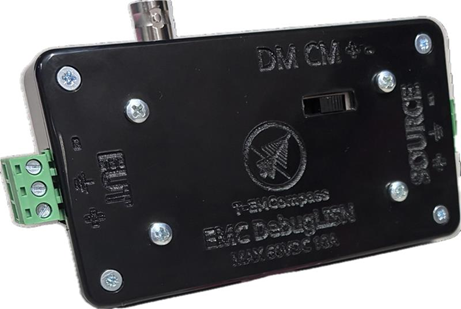
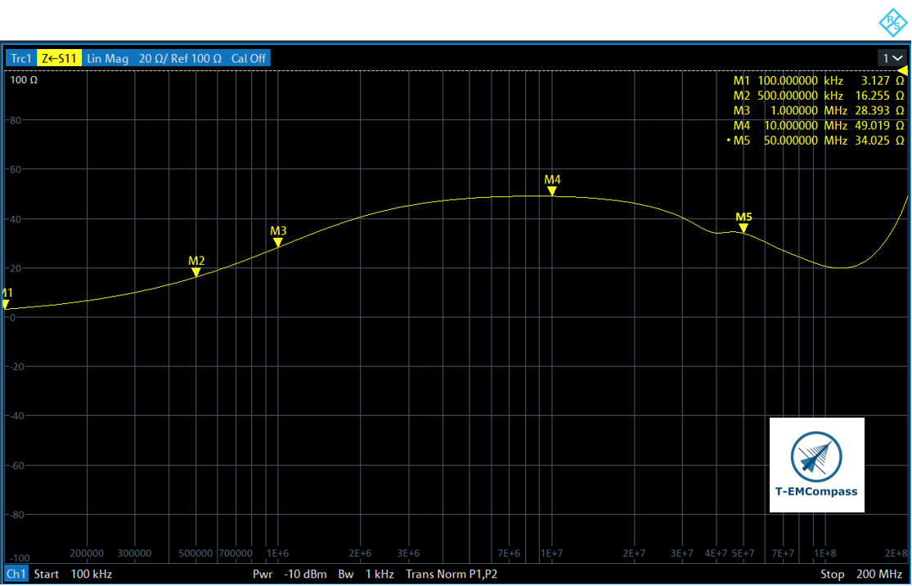
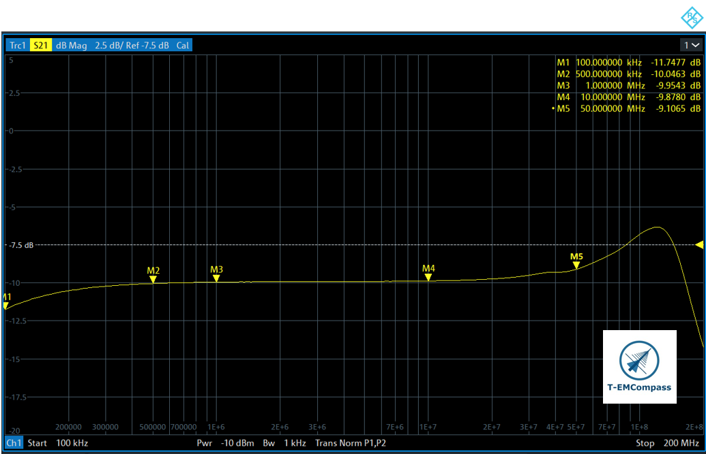

DC DebugLISN V1
Pre-Compliance 5 µH Line Impedance Stabilisation Network · DC Power Lines
About this product
The DC DebugLISN V1 is a compact and affordable Line Impedance Stabilisation Network (LISN), specifically designed for conducted emission debugging on DC power lines.
A LISN provides a defined impedance between the DC supply and the Equipment under Test (EuT), isolating the EuT from disturbances present on the supply line and creating a stable, reproducible 50 Ω measurement port. This enables reliable measurement and comparison of conducted emissions across different test setups, even without access to a full EMC laboratory.
What makes this LISN especially powerful is its ability to switch between common mode, differential mode, and the individual positive and negative lines. This creates a practical way to localise the dominant noise path, simplify debugging, and select the most effective filtering components.
The DC DebugLISN V1 is intended for pre-compliance work: fast, repeatable measurements during the development phase to identify and solve emission issues before entering costly formal EMC testing. The tool-free spring-cage terminal blocks allow quick cable connection, while the BNC measurement port connects directly to a spectrum analyser or EMI receiver.
With a maximum rating of 10 A and up to 60 V DC, it is suitable for a wide range of DC-powered embedded systems, industrial controllers, and automotive sub-systems.
Key features
Wide Frequency Range
150 kHz – 200 MHz — covers the full conducted emission band and well into the radiated range.
Tool-Free Connectivity
Rising-cage pluggable terminal blocks for fast, reliable cable connection without screwdrivers or crimps.
Fast switching between CM/DM/+/-
ability to switch between common mode, differential mode, and the individual positive and negative lines.
10 A / 60 V Rated
Handles a wide range of DC-powered systems: embedded, industrial and low-voltage automotive applications.
Technical specifications
All values measured at room temperature (+23 °C) unless stated otherwise.
| Parameter | Value |
|---|---|
| Frequency Range | 150 kHz – 200 MHz |
| Inductance (nominal) | 5 µH |
| Transducer Insertion Loss | −10 dB ± 1 dB |
| EuT / AE Terminals | Rising-cage pluggable terminal blocks |
| Measuring Port | 50 Ω BNC (female) |
| Max. Voltage | 60 V DC |
| Max. Current | 10 A |
| Operating Temperature | +10 °C to +35 °C |
Typical impedance

Typical voltage division factor (VDF)

Interested in the DC DebugLISN V1?
Contact us for pricing, lead time, or any technical questions.